01Contexte et objectifs
CentreCall, société spécialisée dans l'accueil téléphonique et le télémarketing, souhaite disposer d'un stockage cloud interne. L'atelier consistait à installer Nextcloud, à le sécuriser, puis à le rendre accessible par un nom interne : nextcloud.centrecall.local.
- Mettre en place le serveur Nextcloud et la résolution de son nom.
- Sécuriser le service.
- Vérifier et valider le fonctionnement par des tests.
Le cahier des charges prévoyait aussi un accès Wi-Fi par une borne dédiée ; ce compte rendu couvre la partie Nextcloud.
02Environnement et réseau
Nous avons réutilisé le serveur Ubuntu Server 24.04 mis en place lors de l'atelier précédent (intranet web et FTP), déjà configuré avec l'adresse IP statique 172.18.70.5.


03Accès distant en SSH
Pour que chaque membre de l'équipe puisse administrer le serveur à distance, nous avons installé le serveur OpenSSH.

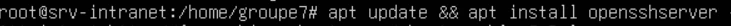

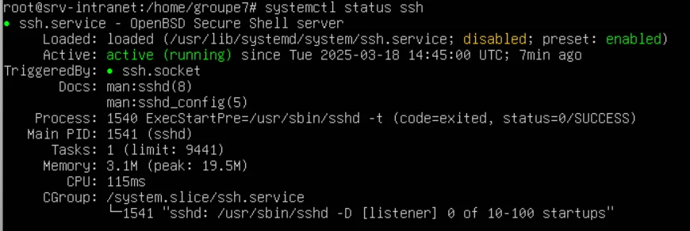
Dans le cadre de l'atelier, le pare-feu ufw a été désactivé pour éviter tout blocage du port 22.

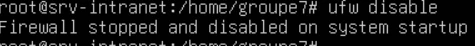
Depuis un poste client, la connexion se fait en ligne de commande avec ssh utilisateur@adresse, ici avec le compte développeur dev1.

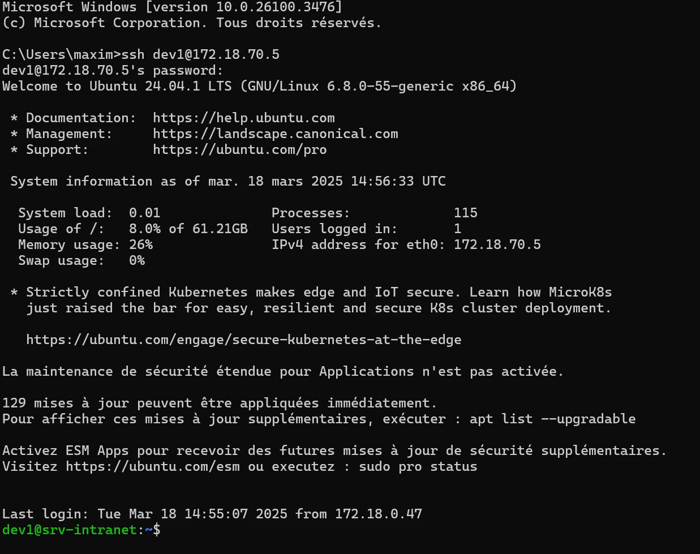
04Installation de Nextcloud
L'archive de Nextcloud est téléchargée avec wget, puis décompressée dans le dossier du serveur web.

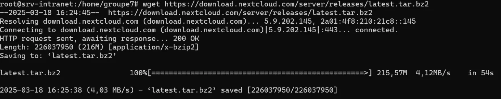
L'utilisateur du serveur web (www-data) devient propriétaire du dossier de Nextcloud.

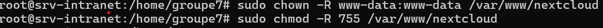
Nous installons ensuite Apache, MariaDB et les modules PHP nécessaires, puis nous sécurisons MariaDB avec mysql_secure_installation.

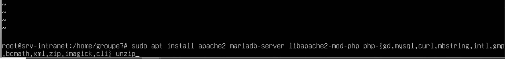

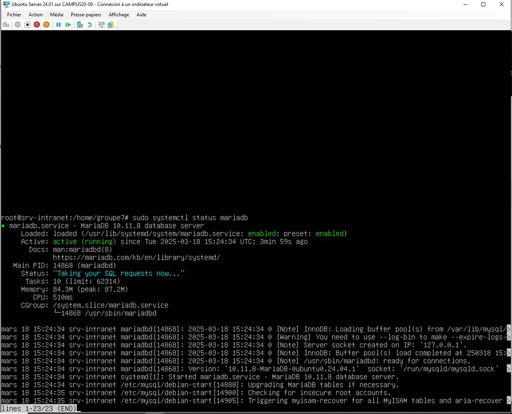

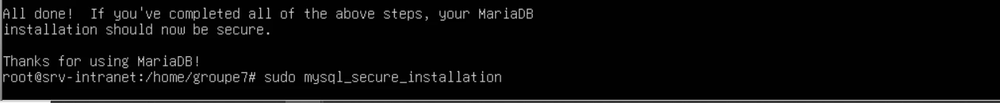
Enfin, nous créons la base de données de Nextcloud et un compte dédié, qui reçoit tous les droits sur cette seule base.

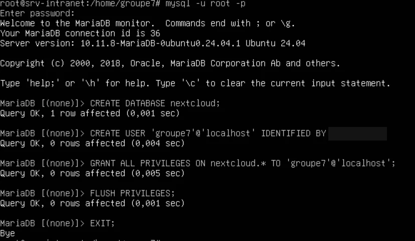
05Configuration du service
Le fichier config.php de Nextcloud est adapté aux besoins de l'atelier, notamment les domaines de confiance et les paramètres de la base de données.

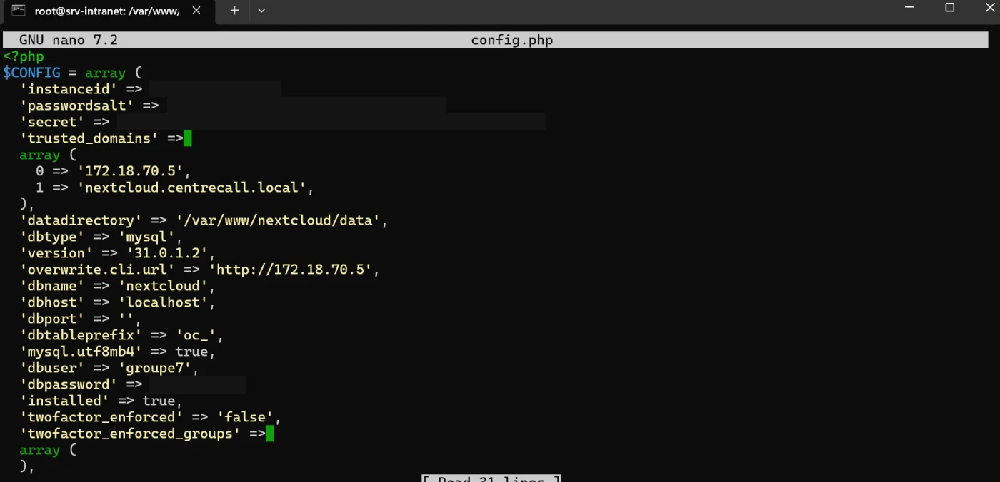
En saisissant l'adresse IP du serveur dans un navigateur, on arrive sur Nextcloud, où l'on crée le compte administrateur du service.

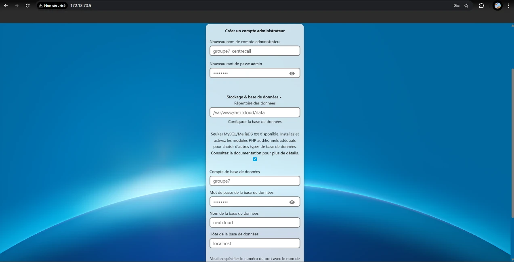
La configuration se termine par l'installation des applications recommandées.

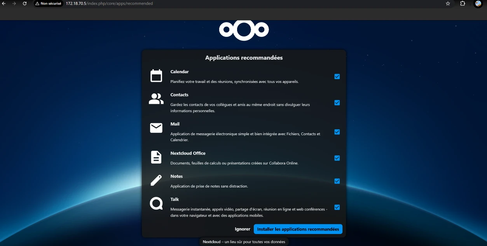
06Sécurisation
Plusieurs mesures renforcent la sécurité du service :
- cinq tentatives de connexion au maximum avant la désactivation du compte ;
- expiration des mots de passe au bout de 90 jours ;
- politique de complexité : 12 caractères au minimum, mots de passe courants interdits.

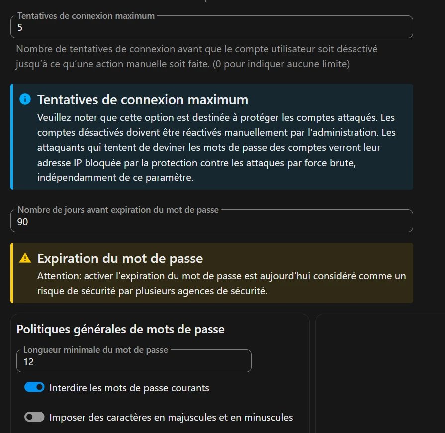
Le chiffrement côté serveur est activé.

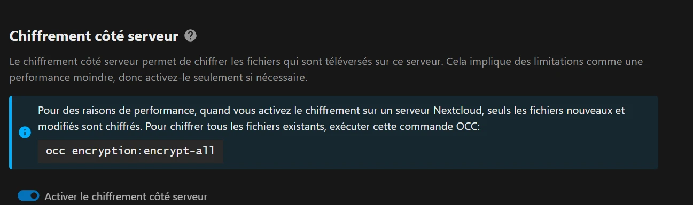
Pour l'authentification à deux facteurs, nous téléchargeons l'application twofactor_totp depuis GitHub, nous la plaçons dans les applications de Nextcloud, puis nous l'activons avec la commande occ.

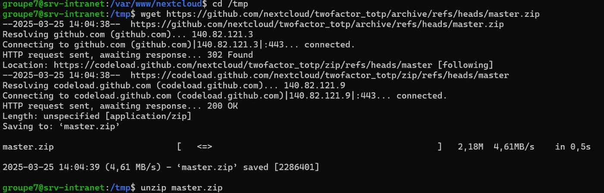

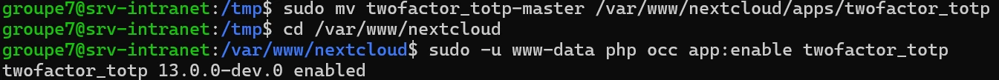
À la connexion, Nextcloud demande désormais un code à usage unique généré par une application d'authentification.

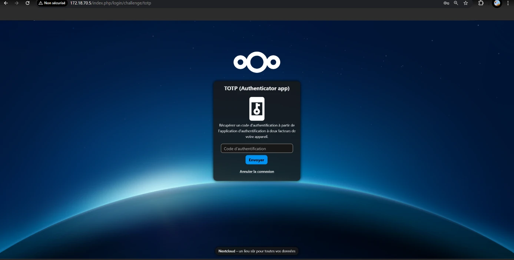
07Application mobile
L'application Nextcloud est installée sur un téléphone depuis l'App Store, pour matérialiser l'accès d'un utilisateur au service.

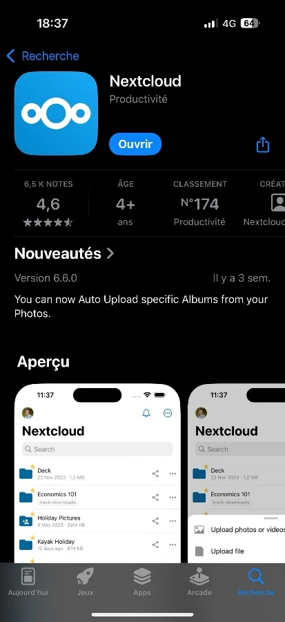

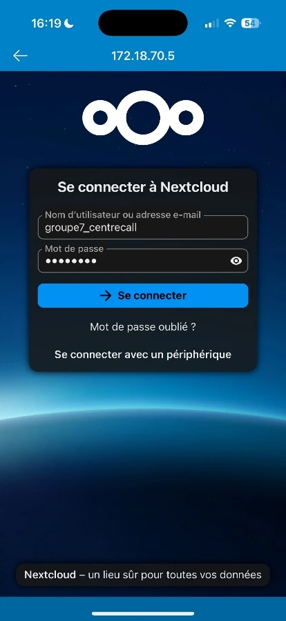
08Fiche de configuration et tests
| Élément | Valeur |
|---|---|
| Service | Nextcloud |
| Système du serveur | Ubuntu Server 24.04 |
| Adresse IP statique | 172.18.70.5 |
| Nom interne | nextcloud.centrecall.local |
| Dossier d'installation | /var/www/nextcloud |
| Base de données | MariaDB, base nextcloud |
| Double authentification | twofactor_totp activé |
| N° | Cas de test | Étapes | Résultat attendu | Statut |
|---|---|---|---|---|
| T1 | Accès web | Saisir 172.18.70.5 dans le navigateur | Page de connexion visible | Fonctionnel |
| T2 | Authentification et 2FA | Identifiants puis code TOTP | Connexion réussie | Fonctionnel |
| T3 | Accès global au service | Tests d'utilisation de Nextcloud | Applications fonctionnelles | Fonctionnel |
09Résolution de nom
Sur le contrôleur de domaine Windows Server mis en place lors d'un atelier précédent, nous créons dans l'outil DNS une zone de recherche directe centrecall.local, avec un hôte A nommé « nextcloud » qui pointe vers l'adresse du serveur.

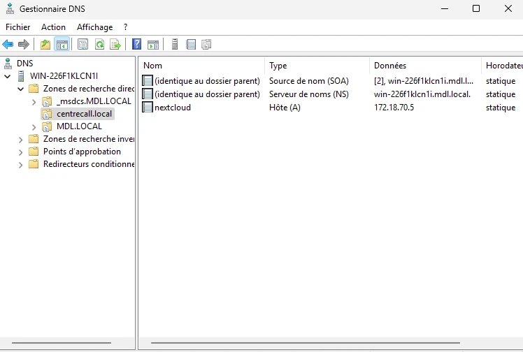
Le poste client utilise ce contrôleur de domaine comme serveur DNS.

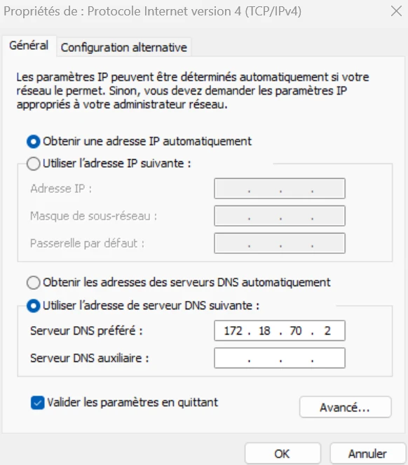
Le service est alors accessible par son nom dans le navigateur.

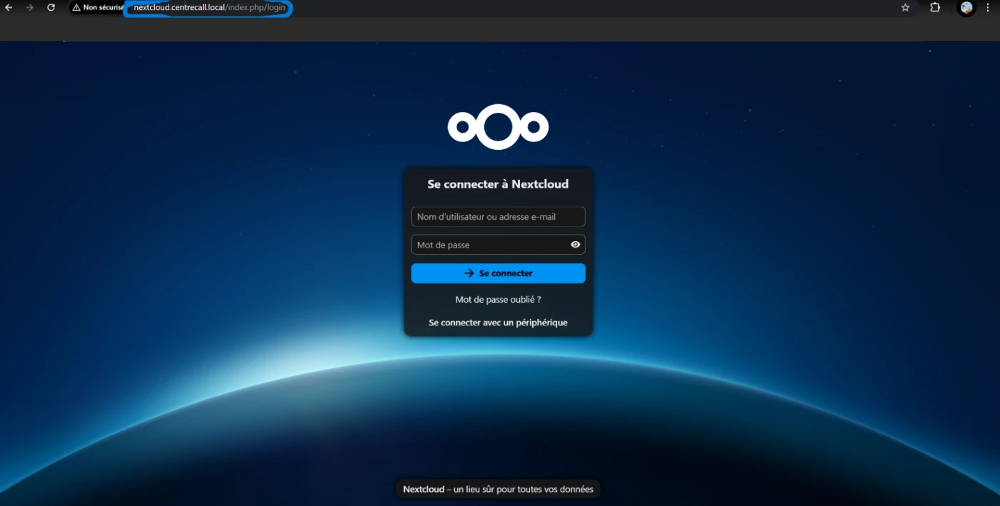